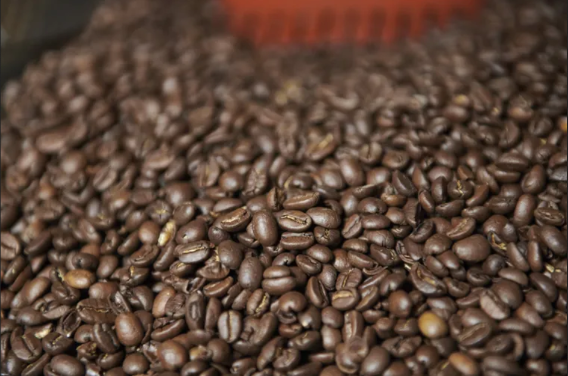

Beneficios que le causa al cuerpo beber café
Solo o acompañado, para arrancar la rutina o durante una pausa en el trabajo, miles de personas adoptan al café como una bebida de ingesta diaria. Lo cierto es que no solo se trata de una infusión apetitosa, sino que su consumo conlleva ciertos beneficios para la salud.
El café aumenta la esperanza de vida
De acuerdo con información publicada en el sitio web de la Facultad de Medicina de la Universidad Johns Hopkins, los bebedores de café tienen menos probabilidades de morir por algunas de las principales causas de muerte como la enfermedad coronaria, el accidente cerebrovascular, la diabetes y la enfermedad renal. A través de un estudio realizado entre 2009 y 2018 y publicado en 2022 en Annals of Internal Medicine, expertos concluyeron que el consumo moderado de café sin azúcar y azucarado se asoció con un menor riesgo de muerte.
A su vez este artículo, titulado Asociación del consumo de café endulzado con azúcar, endulzado artificialmente y sin endulzar con mortalidad por todas las causas y por causas específicas, asegura que el café es una mezcla compleja y que “parece poco probable que la cafeína por sí sola pueda explicar todos los efectos potenciales del café en la salud”. Además, el escrito aclara que los posibles efectos beneficiosos se observan principalmente con un consumo moderado de café.
Disminuye las probabilidades de desarrollar diabetes tipo 2
Por otra parte, la entidad académica señala que existe evidencia de que quienes beben más café tienen menos probabilidades de desarrollar diabetes tipo 2. “El consumo habitual de café puede reducir el riesgo de este tipo de diabetes al prevenir el deterioro de la función hepática y de las células beta durante el estrés metabólico crónico que precede a la manifestación de la diabetes manifiesta”, profundizan Hubert Kolb y sus colegas en el artículo Café y menor riesgo de diabetes tipo 2: argumentos a favor de una relación causal publicado en 2021 en la revista Nutrients.
Quienes beben café tienen menos probabilidad de desarrollar Parkinson
“La cafeína no solo está relacionada con una menor probabilidad de desarrollar la enfermedad de Parkinson, sino que también puede ayudar a las personas con la afección a controlar mejor sus movimientos” , asegura Johns Hopkins.
El café protege el hígado
Tanto el café regular como el descafeinado parecen tener un efecto protector en el hígado. Según refiere la Universidad Johns Hopkins, “las investigaciones muestran que los bebedores de café tienen más probabilidades de tener niveles de enzimas hepáticas dentro de un rango saludable que las personas que no beben café”.
El café fortalece el ADN
Por otro lado, continúa la institución, “el café tostado oscuro disminuye la rotura de las hebras de ADN que se producen de forma natural pero que pueden provocar cáncer o tumores si las células no las reparan”.
Quienes beben café tienen menos probabilidades de contraer algunos tipos de cáncer
Quienes toman esta infusión, ya sea en su versión descafeinada o regular, pueden tener hasta un 26% menos de probabilidades de desarrollar cáncer colorrectal, dice la Universidad Johns Hopkins. Asimismo, este es un punto que se encuentra en constante investigación.
Tal como refleja la experta Kirsty Pourshahidi junto a otros expertos en un artículo de 2016 publicado en la revista Comprehensive Reviews in Food Science and Food Safety, diversos hallazgos observacionales informaron un efecto benéfico o nulo del consumo de café sobre el cáncer, con la excepción de los cánceres de vejiga/tracto urinario donde los riesgos del consumo de café se informan con mayor frecuencia.
“Sin embargo, un mayor riesgo de cáncer de vejiga-urinario, por lo general, solo se informó en hombres, no en mujeres”, dice el artículo titulado Resumen completo de los riesgos y beneficios del consumo de café: consumo de café y salud humana. No obstante, continúa el documento, existen estudios de intervención que sugieren que el café puede tener un papel benéfico en términos de reducir el riesgo de algunos tipos de cáncer.
Tomar café puede disminuir el riesgo de contraer la enfermedad de Alzheimer
Finalmente, la casa de estudios norteamericana indica que la cafeína en dos tazas de café puede brindar una protección significativa contra el desarrollo del Alzheimer. De hecho, agrega, “los investigadores encontraron que las mujeres de 65 años o más que bebían de dos a tres tazas de café al día tenían menos probabilidades de desarrollar demencia en general”. Según desarrolla el artículo de 2016, se ha postulado que los antioxidantes del café capaces de disminuir las especies reactivas del oxígeno pueden dar lugar a una reducción del riesgo de enfermedad de Alzheimer.